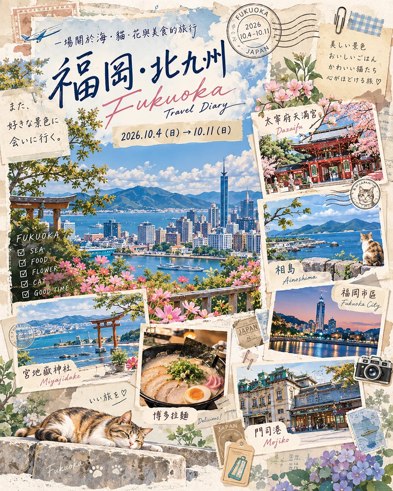

2026.10.4 → 10.118天7夜・獨旅福岡・北九州
福岡・北九州
Travel Diary
海、貓、花與美食的秋日旅行。這份網頁手冊保留原本的明信片拼貼感，並加入日幣換算與 Google 地圖快捷入口。

旅行概要
每日行程
福岡交通方式
旅行工具
¥ 日幣 ↔ 台幣換匯
讀取匯率中…
會嘗試讀取最新參考匯率；也可直接輸入信用卡／現金實際換匯匯率。銀行現鈔、刷卡與海外手續費會造成差異。
Google 地圖快捷入口
點選後會開啟 Google 地圖搜尋。地圖連結不需要在本手冊內嵌 API 金鑰。